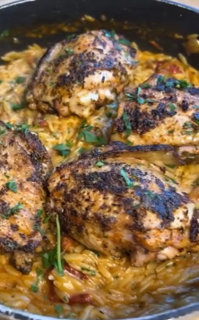

One Pan Chicken & Chorizo Orzo

Original Recipe Source - @WhatWillyCook - Instagram
Ingredients
- 4 Bone-in Chicken Thighs
- Chorizo - chopped into chunks
- 1/2 Red Onion
- 1/2 Large Onion
- Sun-dried Tomatos
- Tomato Paste
- Lemon Zest and Juice
- Chopped Parsley
- 1 Large Spoonful Garlic & Herb Cream Cheese
- Chicken Stock
- Orzo (or Risotto Rice)
- Parmesan
- Salt
- Oregano
- Chives
- Smoked Paprika
- White & Black Pepper
Method
- Place the chicken thighs on a large flat plate. Season liberally with Salt, Pepper, Oregano, Chives, and Smoked Paprika.
- Place the chicken in a large hot flat-bottomed pan to sear/crisp the outside of the meat, before moving to a tray in the oven to continue to cook through.
- Using the same pan, fry the onions and chorizo until the chorizo releases it's flavour.
- Add more salt and pepper, as well as tomato pureé and chopped-up sun-dried tomatos.
- De-glaze the pan with some chicken stock before pouring in the orzo and mixing it around, allowing it to soak up the flavours.
- Continue to cook the orzo similarly to risotto, adding more chicken stock as required.
- Add in the cream cheese, and once softened through, add the lemon zest and juice, parmesan, chopped parsley and mix well.
- Allow to sit for a couple of minutes before dishing up into bowls, placing a piece of the now-cooked chicken on top